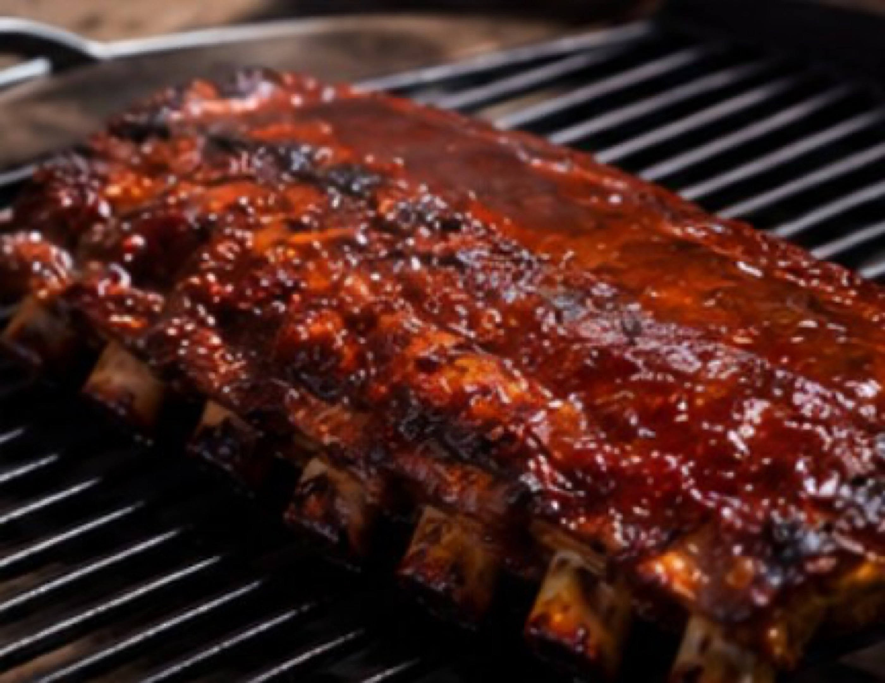

YORON BBQ ／ 本場アメリカンBBQを、与論島から。
本日、
バーベキュー
できます。
時間
料金
※ 時間・料金は設置店さまの記入欄です（油性マーカーでご記入ください）。
YORON BBQ 側で確定した料金体系はないため、あえて印字していません。


レシピと火の話yoron-bbq.com

お問い合わせ公式LINE @637uooyi
「飲みに行こう」が、
そのまま「BBQしよう」になる島で。
蓋を閉めて、間接熱でじっくり。焦がさない、乾かさない。
3〜4時間で、作って食べて片づけて全部終わります。
YORON BBQ